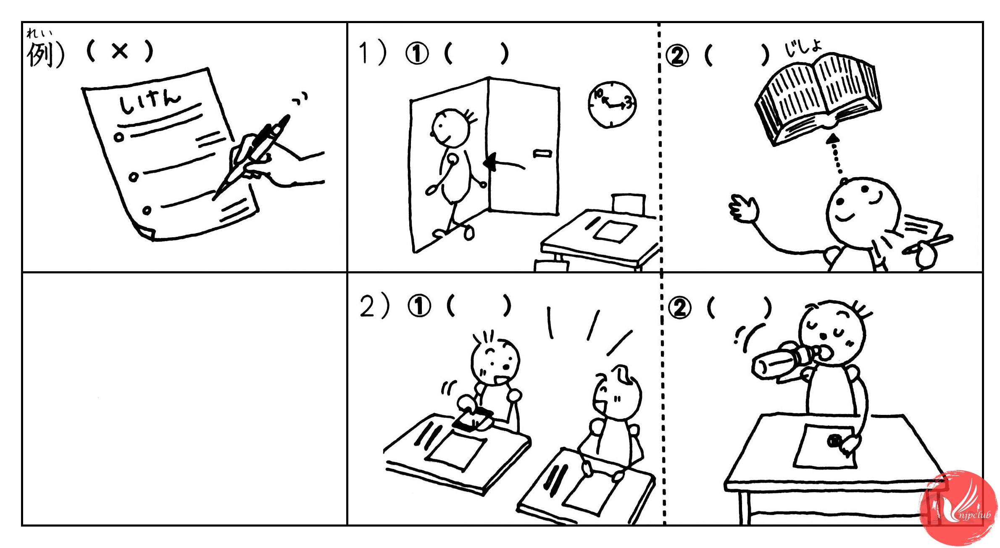

例：
Đáp án: 〇
| A: |
わあ、いい天気。 Wa, thời tiết đẹp nhỉ. あ、きれいな花。 A, hoa cũng đẹp nữa. 写真を 撮りたいな。 Tôi muốn chụp hình. すみません。 Xin lỗi. この 花の 写真を 撮っても いいですか。 Tôi chụp hình hoa này được không ạ? |
| B: |
ええ、どうぞ。 Vâng, xin mời. |
| Đáp án: O |
1)
| A: |
わ、おもしろい店。珍しい物が たくさん・・・。あの、すみません。 A, tiệm thú vị. có nhiều đồ quý hiếm. À này, xin lỗi. |
| C: |
はい、何ですか。 Vâng, chuyện gì thế. |
| A: |
ちょっと 入っても いいですか。 Tôi vào chút có được không? |
| C: |
すみません。店は 11時からです。 Xin lỗi. Tiệm mở từ 11 giờ. |
| A: |
あ、そうですか。 À, vậy à. |
| Đáp án: X |
2)
| A: |
うわあ。広い 公園。 Waa… Công viên rộng nhỉ. ちょっと 休みたいな。 Tôi muốn nghỉ ngơi một chút. すみません。ここに 座っても いいですか。 Xin lỗi, tôi ngồi ở chỗ này được không ạ? |
| D: |
ええ、いいですよ。 Vâng, được mà. |
| Đáp án: O |
3)
| A: |
あのう、これは あなたの 新聞ですか。 Dạ, cái này là tờ báo của bạn phải không? |
| C: |
はい。 Vâng. |
| A: |
ちょっと 見ても いいですか。 Cho tôi xem một chút được không ạ? |
| D: |
ええ。もう 読みましたから、どうぞ。 Vâng, vì tôi đã đọc rồi. Cứ tự nhiên. |
| Đáp án: O |

例：
Đáp án: X
| A: |
皆さん、今から試験を します。 Chào các bạn, bây giờ sẽ bắt đầu kiểm tra. 名前と 番号を 書いてください。 Các bạn hãy điền tên và số báo danh. 答えは 鉛筆で 書いてください。 Trả lời các bạn hãy ghi bằng viết chì. 鉛筆ですよ。 Viết chì nhé. ボールペンを 使っては いけません。 Không được sử dụng viết bi. |
| BC: |
はい。 Vâng ạ. |
| Đáp án: X |
1)
① ____ ②____
| A: |
今９時ですね。 Bây giờ là 9 giờ nhỉ. 試験は １０時半 までです。 Kiểm tra đến 10 giờ 30. １０時半 まで 教室を 出ては いけません。 Bây giờ đến 10 giờ 30, các bạn không được ra khỏi phòng. |
| B: |
はい。先生、辞書を 見ても いいですか。 Vâng ạ. Thưa thầy/cô chúng em xem từ điển được không ạ? |
| A: |
はい、辞書だけ いいです。 Vâng. Chỉ từ điển thôi là được. 本や ノートを 見ては いけません。 Không được nhìn vở hay sách. |
| B: |
はい、わかりました。 Vâng, chúng em đã hiểu rồi ạ. |
| Đáp án: ①X ②X |
2)
①____ ②____
| A: |
皆さん、それから、隣の 人と 話しては いけません。 Bây giờ các bạn không được nói chuyện với người bên cạnh. ケータイも 使っては いけません。 Ngay cả điện thoại di động cũng không được sử dụng. |
| C: |
先生、あのう、水を 飲んでも いいですか。 Thưa thầy/cô, chúng em uống nước được không ạ? |
| A: |
水? 教室で 飲んでも いいですが、 Nước à? Uống ở phòng học cũng được nhưng mà. 外へ 飲みに 行っては いけません。 không được đi ra ngoài uống nước nhé. じゃ、始めましょう。 Vậy thì, chúng ta cùng bắt đầu làm bài nhé. |
| Đáp án: ①X ②O |
| 名前 | 源 ひかる |
| 例） 仕事 |
a. 学生 b. 先生 |
| 1) 結婚 |
a. して います b. して いません |
| 2) 家族 |
a. 3人 b. 5人 |
| 生活 |
a. 両親と 住んでいます b. 一人で 住んでいます |
| 3) ケータイ |
a. 持って います b. 持って いません |
| 例 | |
| A: |
初めまして。ミラーです。 Rất hân hạnh được làm quen. Tôi là Miller. アメリカから 来ました。ＩＭＣで 働いています。 Đến từ Mỹ, đang làm việc tại công ty IMC. |
| B: |
初めまして。 Rất hân hạnh được làm quen. 源ひかるです。 Tôi là Hara hikaru. 富士大学で 美術を 教えています。 Tôi đang dạy mỹ thuật tại đại học Fuji. |
| A: |
富士大学？ じゃ、カリナさんを 知っていますか。 Đại học Fuji? Vậy có biết Karina không? |
| B: |
カリナさん？ ええ、わたしの 学生です。 Karina? Vâng, là học sinh của tôi. |
| 1) | |
| A: |
源ひかるさん、きれいな 名前ですね。 Chào bạn Hara hikaru, tên của bạn đẹp nhỉ. |
| B: |
ありがとうございます。 Cám ơn nhiều. |
| A: |
失礼ですが、結婚していますか。 Xin lỗi, bạn đã kết hôn chưa? |
| B: |
いいえ、独身です。 Chưa, tôi vẫn còn độc thân. |
| A: |
あ、わたしも 独身です。 A, tôi cũng độc thân. |
| 2) | |
| A: |
ひかるさん、ご家族？ Hikaru, gia đình bạn sao? |
| B: |
兄と 妹が います。 Có anh và em gái. 兄は 銀行員です。 Anh trai là nhân viên ngân hàng. 妹は 大学生です。 Em gái là sinh viên đại học 両親は 京都に います。 Bố mẹ sống ở Kyoto. 今は みんな 別々に 住んでいます。 Hiện tại mọi người đang sống riêng biệt. ミラーさんは？ Anh Miller thì sao? |
| A: |
わたしは 姉が 一人 います。 Tôi có 1 chị gái. 両親は ニューヨークに 住んでいます。 Bố mẹ thì đang sống ở Newyork. |
| 3) | |
| A: |
これ、わたしの ケータイの 番号です。 Cái này là số điện thoại của tôi. ひかるさんの 番号は？ Số điện thoại của Hikaru thì sao? |
| B: |
ちょっと 待ってください。 Đợi tôi chút. 今 その番号に 送ります。 Tôi gửi số ngay. |
| A: |
あ、来ました。ありがとうございます。 A, đến rồi. Cám ơn nhiều. |
| Đáp án: 1) b 2) b b 3) a | |
例： ( a )
| A: |
山田さん、着物を 買いたいです。 Anh Yamada, tôi muốn mua Kimono. どこで 売っていますか。 Bán ở đâu vậy? |
| B: |
着物は 高いですよ。 Kimono thì đắt ấy. どんな 着物が 欲しいですか。 Muốn có Kimono như thế nào? |
| A: |
夏の 着物です。 Kimono mùa hè. 来週 お祭りを 見に 行きます。 Tuần sau tôi đi tham gia lễ hội. |
| B: |
ああ、「ゆかた」ですね。 A, là Yukata nhỉ. ゆかたは 安いです。 Yukata thì rẻ. スーパーや デパートで 売っていますよ。 Có bán ở siêu thị hay quầy tạp hóa ấy. |
| A: |
そうですか。じゃ、あした・・・。 Vậy à. Vậy ngày mai ... a. スーパーへ ゆかたを 買いに 行きます Đến siêu thị mua Yukata. b. デパートへ お祭りを 見に 行きます Đến quầy tạp hóa xem lễ hội. |
| Đáp án: a |
1) (___)
| A: |
山田さん、このワイン、おいしいですね。 Yamada, rượu vang này, ngon nhỉ. フランスのですか。 Là của Pháp à? |
| B: |
いいえ、日本のです。 Không, là của Nhật Bản. |
| A: |
Ủa, sản xuất ở Nhật Bản à? |
| B: |
ええ。お酒だけじゃないよ。 Vâng, không phải chỉ rượu thôi đâu. |
| A: |
日本のどこで 造って いますか。 Sản xuất ở đâu của Nhật Bản vậy? |
| B: |
山梨が 有名ですね。北海道、長野・・・。 Yamanashi là nổi tiếng nhỉ. Hokkaido, Nagano ... |
| A: |
じゃ、来月の誕生日は Vậy vào sinh nhật tháng sau thì... a. フランスの ワインを 飲みます。 uống rượu vang Pháp. b. 日本の ワインを 飲みます。 uống rượu vang Nhật. |
| Đáp án: b |
2) (___)
| A: |
掃除機を 買いたいです。 Tôi muốn mua máy hút bụi. 山田さんは どこの 掃除機を 使っていますか。 Chị Yamada đang sử dụng máy hút bụi nào vậy? |
| B: |
わたしは ソージクンを 使っています。 Tôi dùng So-jikun. |
| A: |
ソージクン！ 有名な 掃除機ですね。 So-jiku! Máy hút bụi nổi tiếng nhỉ. |
| B: |
ええ、ソージクンは 一人で 働きますから、とても 便利ですよ。 Vâng, so-jikun vì nó làm việc một mình nên rất tiện lợi. ちょっと 高いですが・・・。 Cho dù hơi đắt một chút... |
| A: |
高いですか。う～ん。でも、わたしは 忙しいですから、 Đắt à. À ừm. Nhưng mà tôi bận rộn nên ... a. ソージクンを 買います。 mua so-jikun. b. 安い掃除機を 買います。 mua máy hút bụi rẻ. |
| Đáp án: a |
3) (___)
| A: |
山田さん、週末に 家族と 食事します。 Chị Yamada, cuối tuần tôi dùng bữa với gia đìn. いいレストランを 教えてください。 Chỉ giúp tôi nhà hàng tốt. |
| B: |
そうですね。レストラン「ピッコロ」は どうですか。 Để xem sao. Nhà hàng Piccolo thì thế nào? 肉の料理が おいしいですよ。 Món ăn làm từ thịt ngon lắm ấy. |
| A: |
ああ、「ピッコロ」は ですか。 A, là Piccolo à. 先月 行きました。 Tháng trước tôi đã đi rồi. |
| B: |
じゃ、「あすか」は？ Vậy Asuka thì sao? 「あすか」の 野菜は おいしいですよ。 Món rau ở Asuka ngon lắm ấy. 店の 庭で 野菜を 作っていますから、とても 新しいです。 Vì người ta trồng rau ở sân vườn của tiệm nên rất là tươi. |
| A: |
いいですね。じゃ、 Tốt nhỉ, vậy thì ... a. 週末は「ピッコロ」で 食事します。 cuối tuần dùng bữa ở Piccolo. b. 週末は「あすか」で 食事します。 cuối tuần dùng bữa ở Asuka. |
| Đáp án: b |
{kind=link}